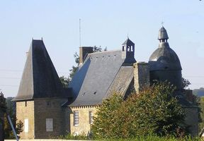
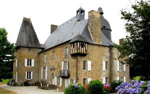
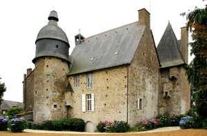
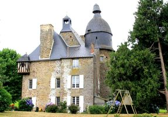

Recensement Jean-Claude Truffet
| Département | 50 — Manche |
| Canton | Saint-Hilaire-du-Harcouët |
| Commune | Mesnillard |
| Type d'édifice | Manoir |
| Période d'origine | XVI |
| Coordonnées GPS | 48° 37' 37,5" Nord, 1° 05' 8,5" Ouest |




FAUCHERIE, Guillaume Cordon, sieur de la Lande, conseiller élu au comté de Mortain le rachète en 1583. Il fut anobli 10 ans plus tard et ses fils, Jacques et Julien, prennent le nom de La Faucherie en 1697. Jacques Cordon, écuyer, sieur, devenu de la Faucherie en le 1er septembre 1627, épouse, en 1618, Yvonne de Vaufleury, doù : Gilles, né vers 1620, écuyer, seigneur de la Faucherie, sans alliance, Jean, né vers 1622, vivant en 1666, Etienne, né vers 1625, vivant en 1666, Jacques puis Jeanne qui épouse vers 1640-1650, Noël Duhamel de la Blanchère, sieur du Boisroussel, procureur à Mortain. Son deuxième fils Jacques de la Faucherie, écuyer, seigneur du manoir de la Faucherie, né vers 1637, épouse, à Mondeville le 4 octobre 1677, Jeanne Morin de Vauguerin, fille de Jacques (écuyer) et Barbe Le Petit, doù : Suzanne, épouse le 3 juillet 1707 Etienne Pitot, sieur de la Harie. Emmanuel, décédé en 1707, Françoise, née au Mesnillard le 8 mars 1682, mariée, au Mesnil-Gilbert le 5 mai 1704, avec Louis Jouaut, sieur de Gourgoux, né vers 1676, fils de Nicolas, sieur de Logerie, et de Jeanne Turpin, de Saint-Laurent de Cuves, Suzanne, épouse le 3 juillet 1707 Etienne Pitot, sieur de la Harie, fils de feu Julien et de Marie Le Boucher, de Tinchebray (Orne), et enfin Mathieu. Le nom de la Faucherie s'éteint en 1827, lors du mariage d'Eulalie de la Faucherie avec Armand du Mesnil. Transmis par les femmes, le Manoir de la Faucherie reste dans la lignée familiale de Guillaume Cordon. Le Manoir de la Faucherie fut la demeure de l'historien Joseph de Robillard de Beaurepaire (1830-1906). propriétaire actuel la famille Rouquérol, manoir, monument historique, est une maison forte du XVI° siècle.
FAUCHERIE; à l'origine, ancienne maison-forte du XVIe siècle à caractère défensif, avec meurtrières, et entourée de douves, disparues aujourdhui. c'est probablement lui qui fit construire le manoir actuel. larrière du manoir a conservé son caractère austère, des transformations successives ont embelli la façade avec notamment les fenêtres agrandies, échauguette à colombages, balcon, corbeaux sous toiture. Sur la tour carrée, à larrière, on note trois latrines, une à chaque étage, disposées de façon décalée qui donnaient sur les douves.Le Manoir de la Faucherie est composé d'un corps de logis qui occupe le centre. Il est flanqué d'une grosse tour où se trouve logé l'escalier. Au corps du logis a été ajouté un bâtiment où l'on trouve la cuisine et qui est orné à l'angle Sud-Est, à la hauteur du premier étage, d'une échauguette. A l'extrémité opposée a été élevé un pavillon saillant, renfermant un petit salon et une chambre. Le manoir est inscrit aux M.H. depuis 1989. C'est un manoir privé, fermé au Public.
Famille de Guillaume Cordon,
"
A Mesnillard château de la Faucherie; GPS : 48° 37' 37,5" Nord, 1° 05' 8,5" Ouest